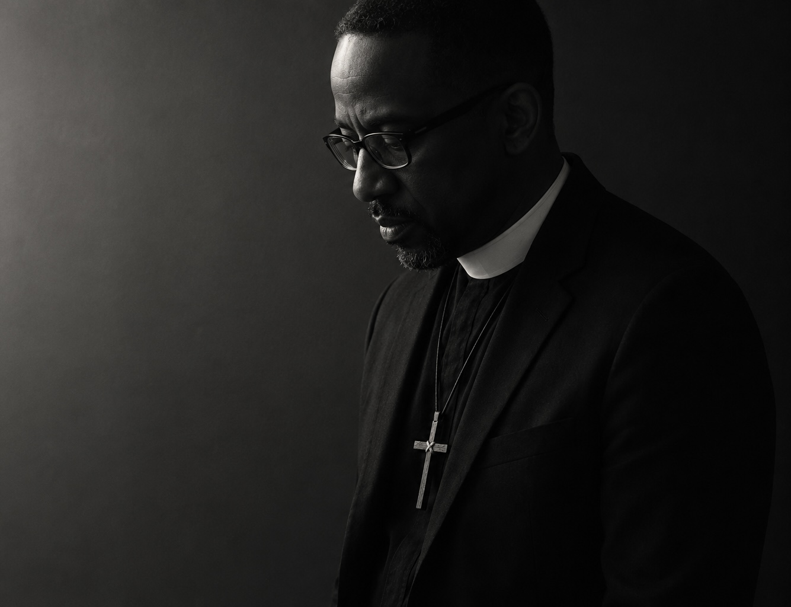

About
Mark Richard Robinson
Minister · Writer · Artist · Public theologian
A lover of God and follower of Christ.
My faith and work grow out of an encounter with the God revealed in Jesus Christ. I am drawn to the ordinary experiences of human life and what they disclose about God and our relationships with one another.
My Story
Life, faith and ministry
I was born in London to Vincentian parents and spent much of my childhood in Trinidad and Tobago and Barbados. My experience of life across the Caribbean and Britain continues to inform my understanding of faith, identity and human belonging.
I am an ordained minister of the United Reformed Church, serving congregations in Hertfordshire. The life of the local church remains central to my ministry and theological reflection.
I have also served as Convenor of the Business Committee of the General Assembly of the United Reformed Church.
Ministry continually brings me into encounters with people whose experiences enlarge my understanding of God. Much of what I have learned about faith has emerged through these relationships.
My Work
Writing and theology
My theological interests include Black Theology, Womanist Theology, Liberation Theology, Practical Theology and the theology of hope.
I am concerned with how we speak of God in the presence of human suffering, and how our understanding of God shapes the way we live with one another. Christian hope, grounded in resurrection, is central to my thinking.
Writing and visual art offer me different ways of exploring these questions. I am interested in memory, embodiment and the experiences through which we come to understand ourselves.
My first novel, A Measure of Breath , was published in October 2025. It explores survival, memory, faith and the continuing significance of the past in human life.
Explore my writing →Jesus came to reveal both the face of God and the face of true humanity.
Mark Richard Robinson